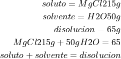

ejercicios de tarea: soluciones procentuales
1. calcula el porcentaje en masa %( p/p ) de una disolucion de 15g de MgCi2 en 50g de agua

15g / 65 * 100 = 23.07 ( p / p ) 65g / 1 * ( 1kg / 1000g ) = 0.065kg 15g mgcl2 / 0.065kg = 230.7 g/kg
2. calcula la cantidad de soluto y solvente para preparar 250g de una disolucion de glicerol al 2% en acetona. Expresa la concentracion en mg/L ( p/v ) y mg/kg ( p / p ) haciendo uso de la densidad de la acetona 0.79 g/mL a 25 °C
soluto + solvente = disolucion glicerol 2% + acetona = 250g
p / p = ( g soluto / g disucion ) * 100
g soluto = ( ( % p / p ) ( g disolucion ) ) / 100
g soluto = ( ( 2 % ) ( 250g ) / 100 ) = 5g
p / p = 5g
v = ( 250 g / 0.79 g/mL ) = 316.5 mL = 0.316.5 L concentracion = 5000 mg / 0.316.5 L = 15797 mg / L = 15.797 g/L
( p / v ) = 15797 mg/L
3. que concentracion en % ( p / v ) y % ( p / p ) posee una disolucion de 10g de dextrosa en H2O destilada que nos encontramos en un matrz aforado de 250 mL
solto 10g solucion 250 mL
p / v = ( 10g / 250 mL ) * 100 = 4 % p / p = ( 10g / 250 g ) * 100 = 4 %
4. una solucion de mgcl2 a 98 g/L de solucion posee una densidad a 20 °C de 1.076 g/mL cual es la concentracion de la solucion en % ( p / p ) y % ( p / v )
mgcl2 98 g/L
s = 1.076 g/mL
p / v = ( 98 g / 1000ml ) x 100 = 9.8 % g/ml p / p = ( 98g / 1076g ) * 100 = 9.1% ( p / p )
ejercicios de tarea: partes por millon
se preparo una solucion 55.25g de sulfato de litio ( LiSO4 ), los cuales se disolvieron en sufiente agua
55.25 / 1200 mL = 55250 mg / 1.2L = 46041.666 ppm
750ml de una solucion de hidroxido ferrico
6 750 mL = 0.75L
ppm = mg soluto / L disolucion
ppm = 420 mg / 0.75 L = 560 ppm
cuantos de
( 120 ppm / 1L ) * 0.8L = 96g